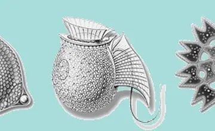
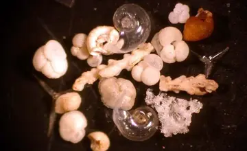
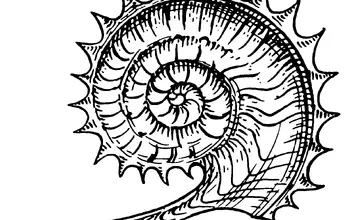
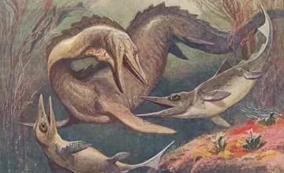
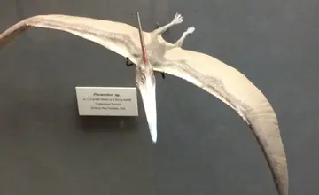
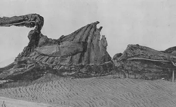
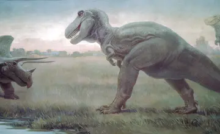
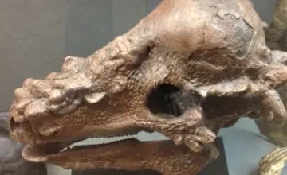

Calcareous phytoplanktonMarine primary producers
At riskEarth Systems · Deep Time · Extinction
The asteroid was real, but the extinction was not a one-frame explosion. Students trace how impact energy, blocked sunlight, volcanic stress, ocean chemistry, and food webs turned one event into a months-to-years ecological collapse.
Maastrichtian paleogeography near 66 Ma, with definitive reconstructed coastlines, an open Central American Seaway, island-rich Europe, and isolated India. Political borders are omitted because countries did not yet exist.
Biosphere status · illustrative sample
The fossil record cannot provide a literal death order. This compressed sequence tracks representative taxa and moves toward the estimated global loss of roughly three out of every four species.








Phytoplankton (NASA, public domain) · Foraminifera (NOAA, public domain) · Ammonite (Pearson Scott Foresman, public domain) · Mosasaurs (Heinrich Harder, 1912, public domain) · Pterosaur model (Archbob, CC0) · Edmontosaurus fossil (1912, public domain) · Pachycephalosaurus fossil (Yinan Chen, public-domain dedication) · Triceratops and Tyrannosaurus (Charles R. Knight, c. 1928, public domain).
The impact caused immediate regional catastrophe, but mass extinction followed through darkness, cooling, starvation, and ecological failure.
The better phrase is non-avian dinosaurs. One theropod lineage survived and diversified into modern birds.
Deccan Traps volcanism had already stressed climate and chemistry. The impact likely landed on an unstable system.
Plankton and foraminifera losses damaged marine food webs from the microscopic base upward.
Small non-avian dinosaurs still vanished, while some larger turtles and crocodilians survived through metabolism, habitat, and flexible diets.
Dates, durations, percentages, body size, and population recovery rates help students see history as connected change.
A large non-avian theropod predator. Use it to ask why apex predators are vulnerable when herbivore prey disappears. Source
A late Cretaceous herbivore. Connect its survival problem to photosynthesis, plant die-off, and calorie demand. Source
A marine reptile, not a dinosaur. Its extinction keeps ocean chemistry and plankton collapse in the story. Source
A pterosaur, not a dinosaur. It helps separate clades from the broad popular label "prehistoric animals." Source
An armored herbivore from the late Cretaceous. Armor did not solve a collapsing food system. Source
A marine cephalopod group that vanished at the boundary. A compact doorway into ocean food webs and index fossils. Source
| Misconception | Better framing |
|---|---|
| Instant explosion | The impact started a cascade. The mass extinction played out through climate, photosynthesis, and food webs. |
| All dinosaurs died | Non-avian dinosaurs died out. Avian dinosaurs survived as birds. |
| Fire killed everything | Fire, tsunamis, and heat mattered, but darkness, cooling, acidification, and starvation carried the global damage. |
| Mammals were smarter | Survival favored niches: small bodies, burrowing, scavenging, flexible diets, seeds, dormancy, and lower energy needs. |
Story of Numbers extension: Build a timeline where each number has a job. Which numbers show scale, which show duration, which show survival, and which reveal that tiny organisms can decide the fate of giant animals?